Basic Plotting
Core plotting entry points and customisation options.
using Graphs, DAGMakie, CairoMakie
# Classic confounding triangle: Z → X → Y, Z → Y
g, labels = confounding_graph(["Z", "X", "Y"])The dagplot Function
The main entry point is dagplot, which creates a new figure:
fig, ax, p = dagplot(g; kwargs...)For plotting into an existing axis, use dagplot!:
p = dagplot!(ax, g; kwargs...)Node Customisation
Size and Colour
Default plots use steel-blue fills with white in-node labels. When you choose light fills, set nlabels_color accordingly (and keep nodes large enough for the label):
fig, ax, p = dagplot(g,
labels = labels,
node_size = 34,
node_color = [:goldenrod, :seagreen, :steelblue],
nlabels_color = :white,
)
fig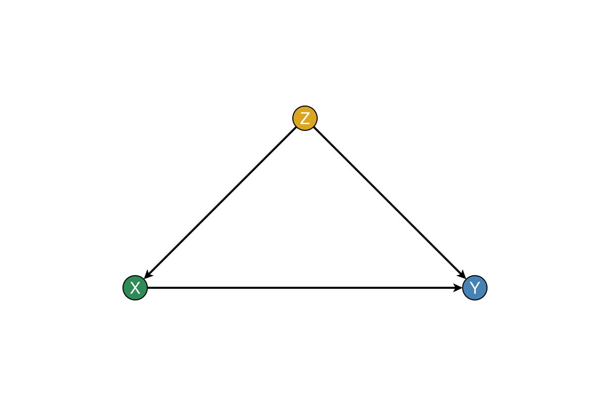
Outline Styling
fig, ax, p = dagplot(g,
labels = labels,
node_strokewidth = 2.0,
node_strokecolor = :black,
)
fig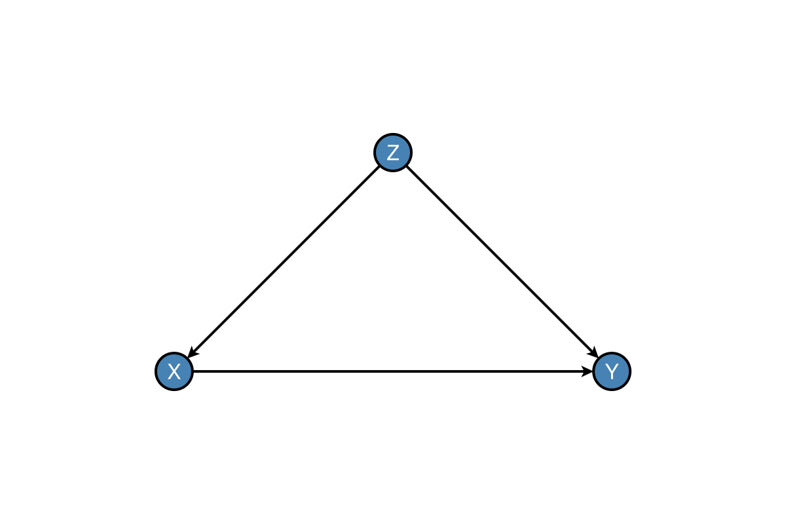
Edge Customisation
fig, ax, p = dagplot(g,
labels = labels,
edge_color = :gray,
edge_width = 1.5,
arrow_size = 12,
arrow_shift = :end,
)
fig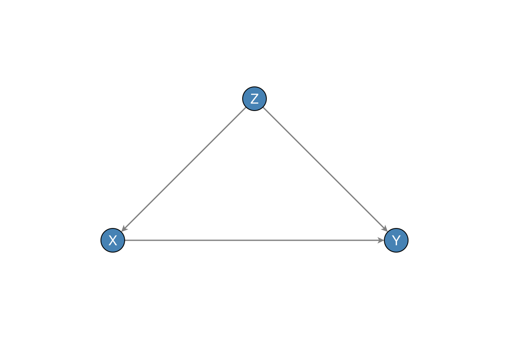
Label Customisation
Basic Labels
In-node labels (default) want a contrasting colour on the fill. External labels need a positive nlabels_distance and a non-centred nlabels_align: GraphMakie offsets along the align direction, so (:center, :center) leaves the pixel offset at zero and the text stays inside the marker. Prefer black text off the fill:
fig = Figure(size = (720, 280))
ax1 = Axis(fig[1, 1], title = "In-node (default)")
ax2 = Axis(fig[1, 2], title = "Outside the node")
dagplot!(ax1, g;
labels = labels,
nlabels_fontsize = 16,
nlabels_color = :white,
nlabels_distance = 0,
)
dagplot!(ax2, g;
labels = labels,
nlabels_color = :black,
nlabels_distance = 12,
# (:center, :bottom) anchors the bottom of the text, so labels sit above
nlabels_align = (:center, :bottom),
)
fig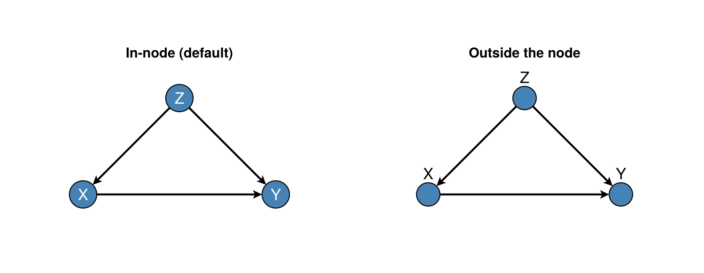
Label Alignment
nlabels_align is the Makie text-box anchor (passed through GraphMakie), not “put the label on this side of the node”. The named side is which edge of the label sits on the anchor point, so the node ends up on that side of the label:
nlabels_align | Anchor meaning | Label ends up… |
|---|---|---|
(:left, :center) | left edge of text on point | right of the node |
(:right, :center) | right edge of text on point | left of the node |
(:center, :bottom) | bottom of text on point | above the node |
(:center, :top) | top of text on point | below the node |
With a positive nlabels_distance, GraphMakie also shifts the anchor along the same direction (so (:left, :center) both left-anchors and nudges east).
By default labels sit inside the node (label_position = :inner), and marker size follows each label (fit_node_size_to_labels = true): short labels keep round circles; wider ones become ovals (Makie.Circle scaled anisotropically). Pass fit_node_size_to_labels = false for a uniform theme size, or set node_size explicitly.
using Graphs, DAGMakie, CairoMakie
g2, labels2 = confounding_graph(["nutrition", "X", "Y"])
fig, ax, p = dagplot(g2; labels = labels2)
fig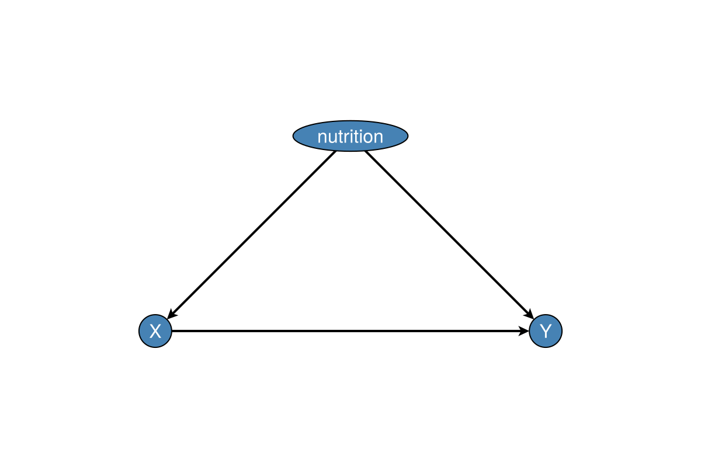
Pass label_position = :outer to place labels outside in the largest angular gap between incident edges (dagitty-style external labels). That mode uses a positive distance, dark text, and a compact node size (OUTER_LABEL_NODE_SIZE) unless you override them (label fitting is skipped while labels are outside):
fig, ax, p = dagplot(g,
labels = labels,
label_position = :outer,
)
fig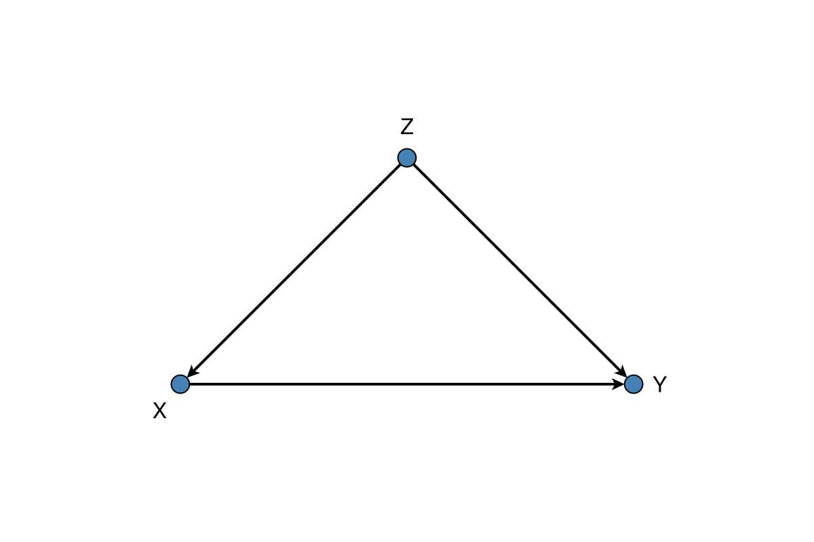
Manual anchors (still typically with a positive nlabels_distance when labels sit outside the fill). Panel titles show where the label appears relative to the node:
fig = Figure(size = (720, 280))
ax1 = Axis(fig[1, 1], title = "(:right, :bottom) → label NW of node")
ax2 = Axis(fig[1, 2], title = "Per-node anchors")
dagplot!(ax1, g;
labels = labels,
label_position = :inner,
nlabels_distance = 12,
nlabels_color = :black,
nlabels_align = (:right, :bottom),
)
dagplot!(ax2, g;
labels = labels,
label_position = :inner,
nlabels_distance = 12,
nlabels_color = :black,
# Z right-anchored → label west; X top-anchored → label south; Y left-anchored → label east
nlabels_align = [(:right, :center), (:center, :top), (:left, :center)],
)
fig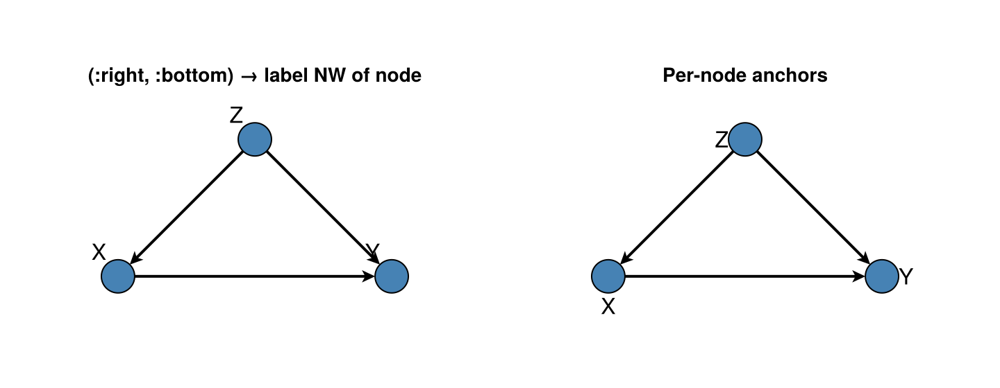
Layout
DAGMakie now defaults to an automatic layout strategy:
layout_mode = :autochooses a deterministic layered layout for acyclic graphslayout_mode = :cyclicuses an SCC-aware layout with curved feedback edgeslayout_mode = :springfalls back to a force-directed layoutlayout = ...still accepts explicit node positions or aNetworkLayout.jllayout object- Within-layer
node_gapdefaults to2.6forlabel_position=:innerand1.8for:outer(override withnode_gap=…) - Edges are straight by default; curve forks or skip chords with
:curved,CurvedEdge(), or a bow fraction (long_edge_routing = :quadraticwhen curved) (see Output Quality) - Per-edge overrides:
edge_routing = Dict((1, 4) => :curved, (1, 5) => CurvedEdge(bow = 0.28))(:straight,:curved, a bow fraction, orCurvedEdge(distance=…)for bend angle) - Comparison / intervention helpers reuse a shared layout result so panels do not jump
For CPDAG skeletons and occasion×variable grids, see Skeletons & Time (dagplot_skeleton, dagplot_time_indexed).
You can still use NetworkLayout.jl directly when you want a force-directed layout:
fig, ax, p = dagplot(g, labels = labels, layout_mode = :spring)
fig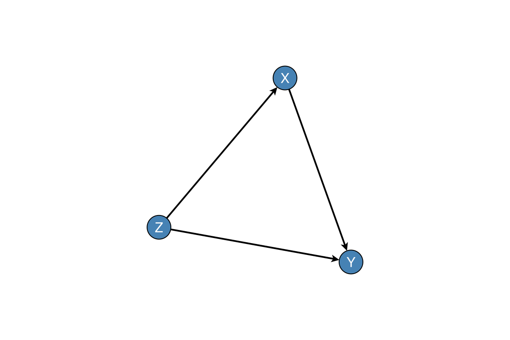
using NetworkLayout
fig = Figure(size = (720, 280))
ax1 = Axis(fig[1, 1], title = "Spring()")
ax2 = Axis(fig[1, 2], title = "Stress()")
dagplot!(ax1, g; labels = labels, layout = Spring())
dagplot!(ax2, g; labels = labels, layout = Stress())
fig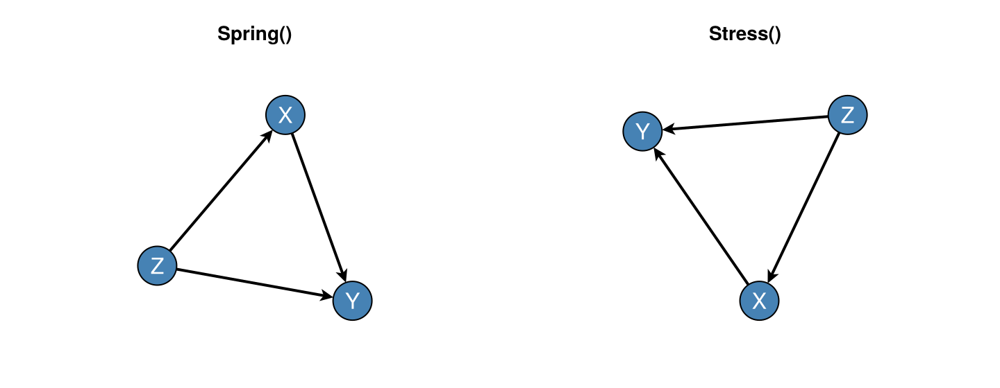
Figure Size
fig, ax, p = dagplot(g,
labels = labels,
figure_size = (480, 320), # Width × Height in pixels
)
fig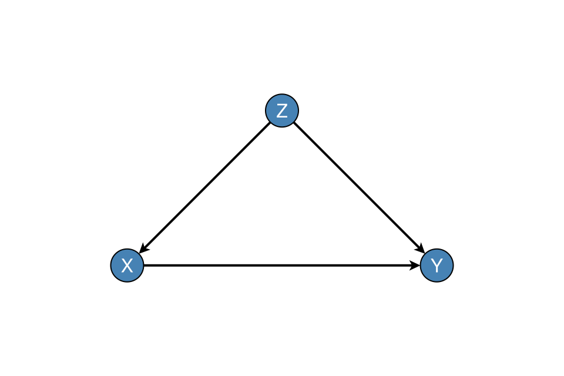
Structural edge labels (LaTeX)
GraphMakie elabels pass through dagplot / dagplot!. Use structural_edge_labels to annotate edges with linear-SCM structural weights from a matrix $B$ (with $B_{ij}$ the parameter on $j\to i$), or with short TeX fragments of a mechanism, optionally as Makie LaTeXStrings. A non-zero diagonal is treated as a self-loop: by default structural_edge_labels adds any missing i → i edges on g before labelling (layout still treats the loopless core as a DAG). Prefer a dedicated copy of the graph if later chunks must keep the original edge set:
B = [
0.0 0.0 0.0;
0.8 0.0 0.0;
0.5 1.2 3.0;
]
g_loop, labels_loop = confounding_graph(["Z", "X", "Y"])
fig, ax, p = dagplot(g_loop;
labels = labels_loop,
elabels = structural_edge_labels(g_loop, B; digits = 1), # adds Y → Y
elabels_fontsize = 14,
elabels_distance = 12,
elabels_rotation = 0, # keep maths upright
)
fig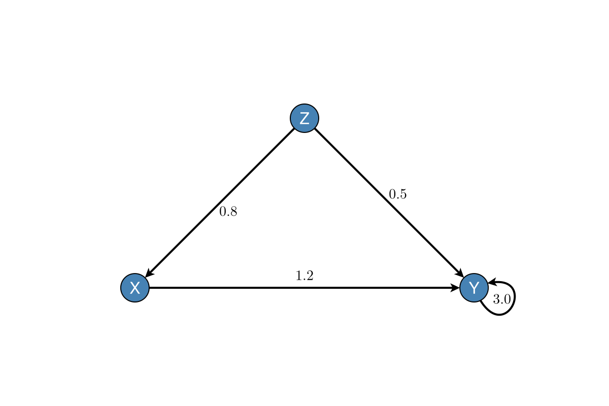
Custom TeX on edges (still one label per Graphs.edges(g) entry):
fig, ax, p = dagplot(g;
labels = labels,
elabels = structural_edge_labels(
g,
["\\beta_{ZX}", "\\beta_{ZY}", "\\beta_{XY}"];
latex = true,
),
elabels_fontsize = 14,
elabels_distance = 12,
elabels_rotation = 0,
padding = 0.45,
)
fig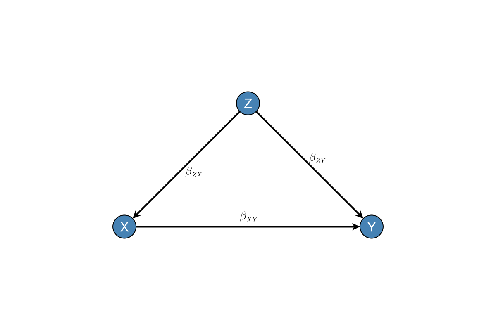
Padding
Control spacing around the graph:
fig, ax, p = dagplot(g,
labels = labels,
padding = 0.15, # 15% padding (fraction of range)
)
fig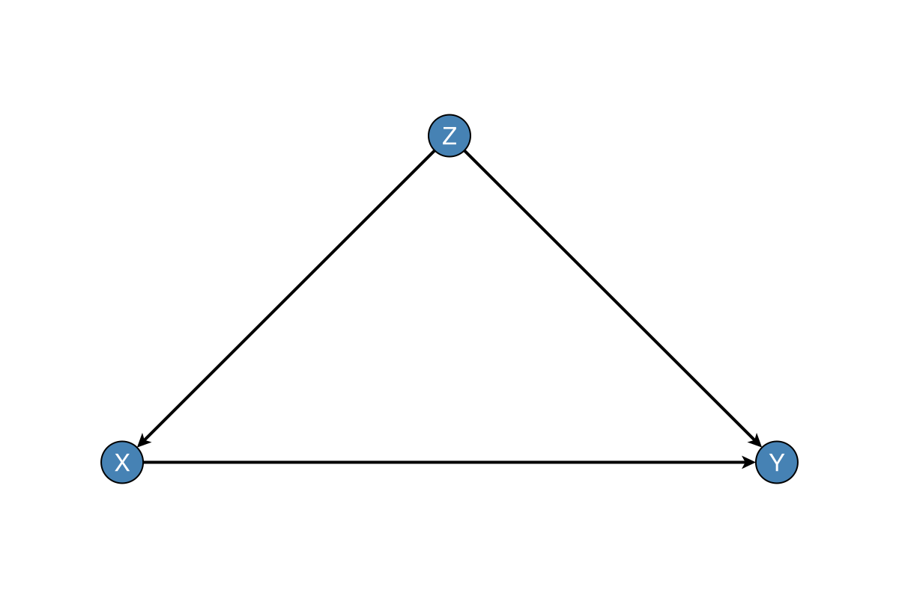